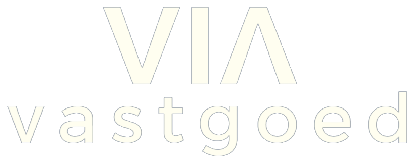
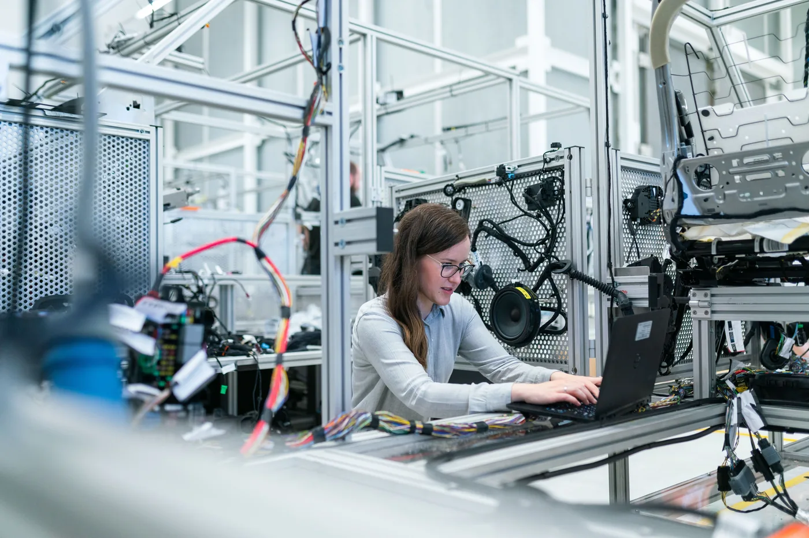
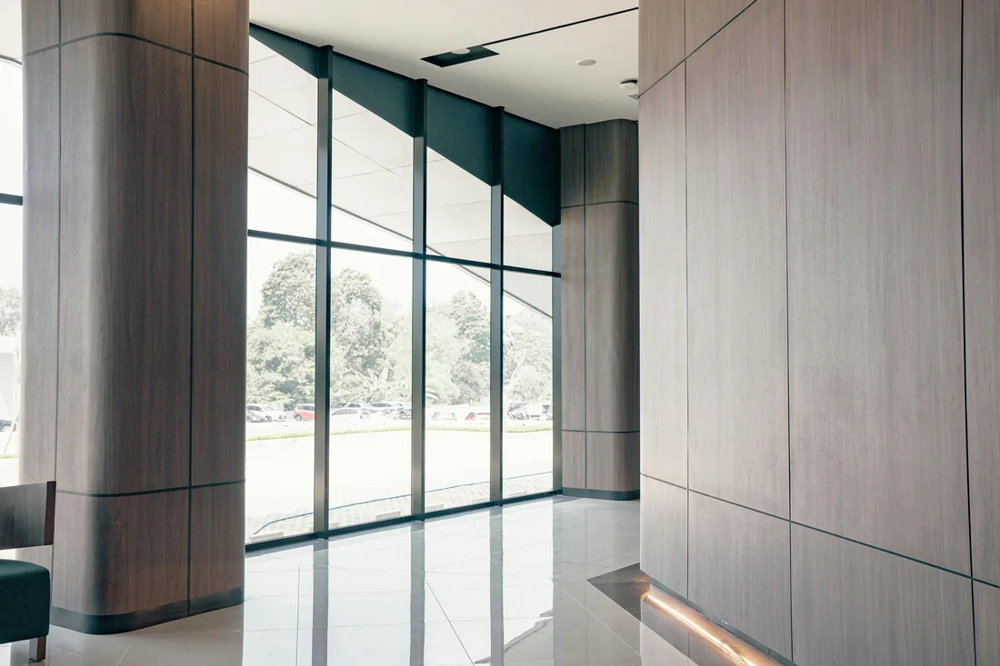
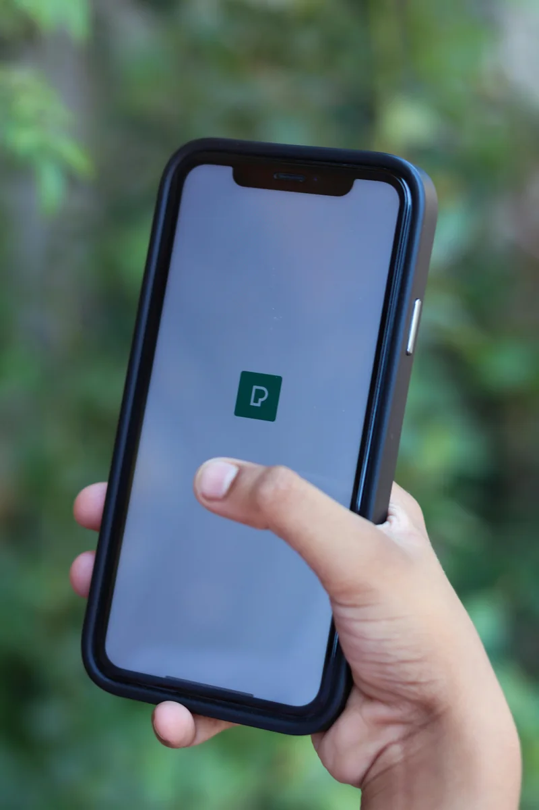
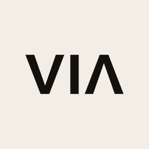
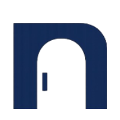

Geen advies, geen abonnement. Concrete systemen die je leads, data en opvolging automatiseren, en die jij daarna zelf beheert.
Vertrouwd door



Ruim acht op de tien organisaties gebruiken inmiddels AI. Toch vertaalt slechts een kleine groep koplopers het naar meetbaar rendement. Het verschil zit niet in de tools, maar in de uitvoering.
Onderzoek van MIT en RAND laat zien dat 70 tot 85% van de AI-initiatieven de verwachte resultaten niet haalt. Bijna twee derde van de organisaties blijft steken in pilots die nooit in productie komen.
De koplopers doen het anders. Ze starten bij een concreet probleem, automatiseren alleen wat echt tijd of geld oplevert, en bouwen het in in het dagelijkse proces in plaats van het als los experiment te laten bestaan.
Precies zo werken wij, van het eerste gesprek tot een werkend systeem dat jij daarna zelf beheert. Benieuwd wat dat voor jouw organisatie betekent? Neem contact met ons op.
Concrete stappen, van intake tot volledige overdracht.
We kijken waar tijd verloren gaat voordat we ook maar iets bouwen. Je eerste gesprek is altijd gratis, zonder enige verplichting.
Een helder plan: wat bouwen we, met welke tools, in welke volgorde. Je weet vooraf welk resultaat je kunt verwachten, geen verrassingen.
We bouwen het systeem en koppelen het aan je bestaande tools. Je test mee gedurende het traject en stuurt bij waar nodig.
Je team krijgt training en volledige documentatie van alles. Geen verplicht abonnement: je houdt zelf de controle.


Voorheen was een nieuwe lead gelijk handmatig werk. Nu staat er een heel nurture-traject klaar. Van de eerste mail tot aan een deal, alles gaat automatisch. Dat neemt ons echt een hoop uit handen.

Ze hebben ons geholpen bij het opbouwen van de website. Met onder andere de AI-calculator kunnen klanten meteen zien wat er voor hen mogelijk is. Daarmee komen ze al goed geïnformeerd het gesprek in.

Allebei kan. Soms bouwen we alleen mailautomatisering of één koppeling, soms een compleet systeem van intake tot CRM. In de gratis intake bepalen we samen de kleinste set die het meeste oplevert, zonder dat je meteen aan een groot traject vastzit.
Dat hangt af van wat je nodig hebt. Omdat we op maat bouwen, krijg je na de intake een vaste prijs voor een afgebakend resultaat, geen uurtje-factuurtje en geen verrassingen achteraf. Je beslist pas als je precies weet wat je krijgt en wat het kost.
De meeste systemen bouwen we in vier tot zes weken van intake tot oplevering. Losse automatiseringen vaak sneller. We werken in korte, concrete stappen zodat je onderweg al resultaat ziet in plaats van pas aan het eind.
Ja. De diensten hierboven zijn de meest gevraagde, maar we bouwen net zo goed maatwerk-koppelingen, interne tools of complete websites. Als het je tijd kost en te automatiseren is, kijken we ernaar tijdens de intake.
Vrijwel altijd. We koppelen aan bestaande CRM's en tools zoals Pipedrive en ActiveCampaign via maatwerk-API's, en bouwen rond jouw werkwijze in plaats van andersom. Je hoeft dus niet over te stappen op nieuwe software.
Het systeem is van jou en draait zelfstandig. We leveren documentatie en training mee, zodat je team het zelf beheert, en blijven beschikbaar voor onderhoud of doorontwikkeling, zonder verplicht abonnement.
Plan een gratis intake. We komen langs, kijken naar je proces en vertellen eerlijk wat we voor je kunnen bouwen.
Plan een gratis intake